Ambiguity of the Pole Figure to ODF Reconstruction Problem
demonstrates different sources of ambiguity when reconstructing an ODF from pole figure diffraction data.
| On this page ... |
| The ambiguity due to too few pole figures |
| The ambiguity due to too Fridel's law |
| The inherent ambiguity of the pole figure - ODF relationship |
The ambiguity due to too few pole figures
Due to experimental limitations one is usually restricted to a short list of crystal directions (Miller indece) for which diffraction pole figures can be measured. In general more measured pole figures implies more reliable ODF reconstruction and low symmetry materials and weak textures usually requires more pole figures then sharp texture with a high crystal symmetry. From a theoretial point of view the number of pole figures should be at a level with the square root of the number of pole points in each pole figure. This is of course far from experimentaly possible.
Lets demonstrate the ambiguity due to too few pole figures at the example of two orhorhombic ODFs. The first ODF has three modes at the positions
cs = crystalSymmetry('mmm') orix = orientation('axis',xvector,'angle',90*degree,cs) oriy = orientation('axis',yvector,'angle',90*degree,cs) oriz = orientation('axis',zvector,'angle',90*degree,cs) odf1 = unimodalODF([orix,oriy,oriz])
cs = crystalSymmetry
symmetry: mmm
a, b, c : 1, 1, 1
orix = orientation
size: 1 x 1
crystal symmetry : mmm
specimen symmetry: 1
Bunge Euler angles in degree
phi1 Phi phi2 Inv.
0 90 0 0
oriy = orientation
size: 1 x 1
crystal symmetry : mmm
specimen symmetry: 1
Bunge Euler angles in degree
phi1 Phi phi2 Inv.
90 90 270 0
oriz = orientation
size: 1 x 1
crystal symmetry : mmm
specimen symmetry: 1
Bunge Euler angles in degree
phi1 Phi phi2 Inv.
90 0 0 0
odf1 = ODF
crystal symmetry : mmm
specimen symmetry: 1
Radially symmetric portion:
kernel: de la Vallee Poussin, halfwidth 10°
center: Rotations: 1x3
weight: 1
The second ODF has three modes as well but this times at rotations about the axis (1,1,1) with angles 0, 120, and 240 degree.
ori = orientation('axis',vector3d(1,1,1),'angle',[0,120,240]*degree,cs) odf2 = unimodalODF(ori)
ori = orientation
size: 1 x 3
crystal symmetry : mmm
specimen symmetry: 1
Bunge Euler angles in degree
phi1 Phi phi2 Inv.
0 0 0 0
90 90 0 0
180 90 90 0
odf2 = ODF
crystal symmetry : mmm
specimen symmetry: 1
Radially symmetric portion:
kernel: de la Vallee Poussin, halfwidth 10°
center: Rotations: 1x3
weight: 1
These two ODFs are completely disjoint. Lets check this by plotting them as sigma sections
figure(1) plot(odf1,'sigma') mtexColorMap LaboTeX figure(2) plot(odf2,'sigma') mtexColorMap LaboTeX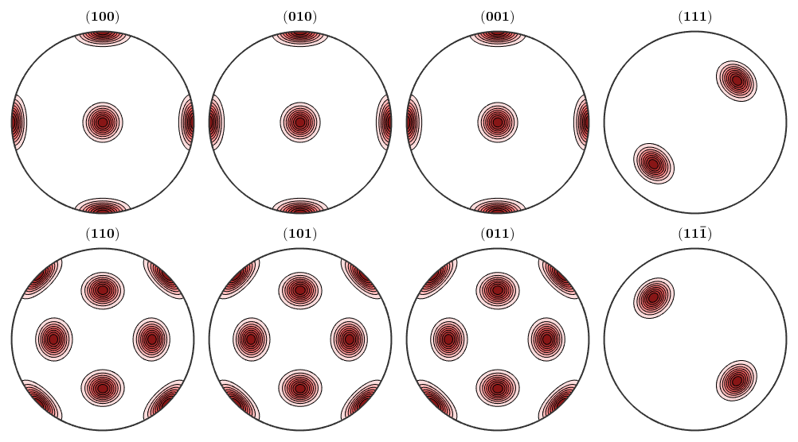
However, when it comes to pole figures 7 of them, namely, (100), (010), (001), (110), (101), (011) and (111), are identical for both ODFs. Of course looking at any other pole figure makes clear that those two ODFs are different.
figure(1)
h = Miller({1,0,0},{0,1,0},{0,0,1},{1,1,0},{1,0,1},{0,1,1},{1,1,1},{1,2,0},cs);
plotPDF(odf1,h,'contourf')
mtexColorMap LaboTeX
figure(2)
plotPDF(odf2,h,'contourf')
mtexColorMap LaboTeX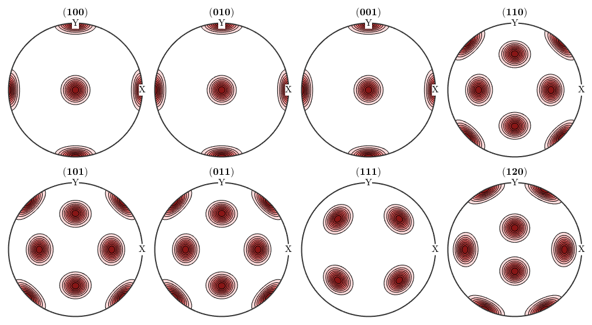 The question is now, how can any pole figure to ODF reconstruction algorithm decide which of the two ODFs was the true one if only the seven indetical pole figures (100), (010), (001), (110), (101), (011), (111) have been measured? The answer is: this is imposible to decide. Next question is: which result will I get from the MTEX reconstruction algorithm? Lets check this
% 1. step: simulate pole figure data pf = calcPoleFigure(odf1,h(1:7),'upper') plot(pf)
pf = PoleFigure crystal symmetry : mmm specimen symmetry: 1 h = (100), r = 72 x 19 points h = (010), r = 72 x 19 points h = (001), r = 72 x 19 points h = (110), r = 72 x 19 points h = (101), r = 72 x 19 points h = (011), r = 72 x 19 points h = (111), r = 72 x 19 points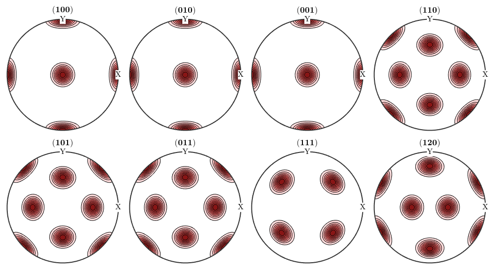
2. step: reconstruct an ODF
odf = calcODF(pf)
plot(odf,'sigma')initialize solver
start iteration
error: 9.2225E-01 3.3227E-01 1.5410E-01 8.9463E-02 4.6815E-02 3.1214E-02 2.2313E-02 1.7208E-02 1.3749E-02 1.1335E-02 9.5214E-03 8.1722E-03
Finished PDF-ODF inversion.
error: 8.1722E-03
alpha: 3.0698E+00 3.2531E+00 3.2582E+00 2.9567E+00 2.9583E+00 2.8542E+00 2.9222E+00
odf = ODF
crystal symmetry : 222
specimen symmetry: 1
Radially symmetric portion:
kernel: de la Vallee Poussin, halfwidth 5°
center: 29772 orientations, resolution: 5°
weight: 1
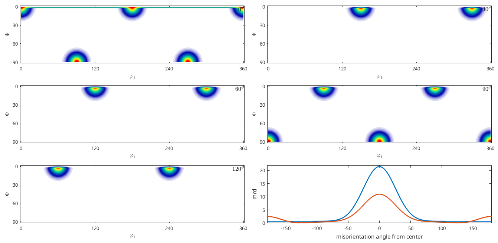 We observe that the reconstructed ODF is an almost perfect mixture of the first and the second ODF. Acutally, any mixture of the two initial ODFs would have been a correct answer. However, the ODF reconstructed by the MTEX algorithm can be seen as the ODF which is closest to the uniform distribution among all admissible ODFs.
Finally we increase the number of pole figures by five more crystal directions and perfrom our previous experiment once again.
% 1. step: simulate pole figure data for all crystal directions h = [h,Miller({0,1,2},{2,0,1},{2,1,0},{0,2,1},{1,0,2},cs)]; pf = calcPoleFigure(odf1,h,'upper') % 2. step: reconstruct an ODF odf = calcODF(pf) plot(odf,'sigma')
pf = PoleFigure
crystal symmetry : mmm
specimen symmetry: 1
h = (100), r = 72 x 19 points
h = (010), r = 72 x 19 points
h = (001), r = 72 x 19 points
h = (110), r = 72 x 19 points
h = (101), r = 72 x 19 points
h = (011), r = 72 x 19 points
h = (111), r = 72 x 19 points
h = (120), r = 72 x 19 points
h = (012), r = 72 x 19 points
h = (201), r = 72 x 19 points
h = (210), r = 72 x 19 points
h = (021), r = 72 x 19 points
h = (102), r = 72 x 19 points
initialize solver
start iteration
error: 8.7108E-01 4.5524E-01 2.2366E-01 1.4433E-01 8.1065E-02 5.4275E-02 3.7888E-02 2.9153E-02 2.3480E-02 1.9445E-02 1.6504E-02 1.4286E-02
Finished PDF-ODF inversion.
error: 1.4286E-02
alpha: 3.0839E+00 3.1966E+00 3.2030E+00 2.9477E+00 2.9491E+00 2.8752E+00 2.8959E+00 3.0319E+00 2.9560E+00 2.9993E+00 2.9982E+00 2.9558E+00 3.0334E+00
odf = ODF
crystal symmetry : 222
specimen symmetry: 1
Radially symmetric portion:
kernel: de la Vallee Poussin, halfwidth 5°
center: 29772 orientations, resolution: 5°
weight: 1
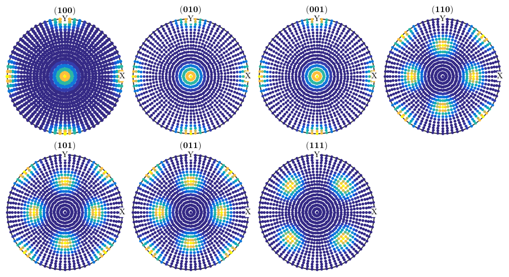 Though the the components of odf2 are still present in the recalculated ODF the are far less pronounced compared to the components of odf1.
% 1. step: simulate pole figure data for all crystal directions pf = calcPoleFigure(odf1,h,'upper') % 2. step: reconstruct an ODF odf = calcODF(pf) plot(odf,'sigma')
pf = PoleFigure
crystal symmetry : mmm
specimen symmetry: 1
h = (100), r = 72 x 19 points
h = (010), r = 72 x 19 points
h = (001), r = 72 x 19 points
h = (110), r = 72 x 19 points
h = (101), r = 72 x 19 points
h = (011), r = 72 x 19 points
h = (111), r = 72 x 19 points
h = (120), r = 72 x 19 points
h = (012), r = 72 x 19 points
h = (201), r = 72 x 19 points
h = (210), r = 72 x 19 points
h = (021), r = 72 x 19 points
h = (102), r = 72 x 19 points
initialize solver
start iteration
error: 8.7108E-01 4.5524E-01 2.2366E-01 1.4433E-01 8.1065E-02 5.4275E-02 3.7888E-02 2.9153E-02 2.3480E-02 1.9445E-02 1.6504E-02 1.4286E-02
Finished PDF-ODF inversion.
error: 1.4286E-02
alpha: 3.0839E+00 3.1966E+00 3.2030E+00 2.9477E+00 2.9491E+00 2.8752E+00 2.8959E+00 3.0319E+00 2.9560E+00 2.9993E+00 2.9982E+00 2.9558E+00 3.0334E+00
odf = ODF
crystal symmetry : 222
specimen symmetry: 1
Radially symmetric portion:
kernel: de la Vallee Poussin, halfwidth 5°
center: 29772 orientations, resolution: 5°
weight: 1
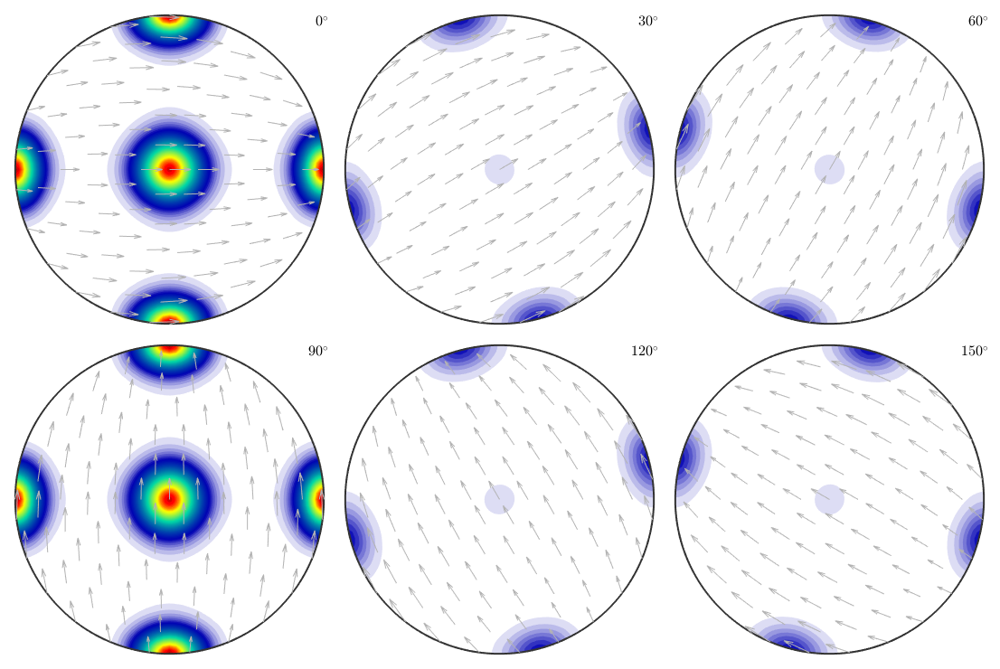
The ambiguity due to too Fridel's law
Due to Fridel's law pole figure data always impose antipodal symmetry. In order to demonstrate the consequences of this antipodal symmetry we consider crystal symmetry -43m
cs = crystalSymmetry('-43m')cs = crystalSymmetry symmetry: -43m a, b, c : 1, 1, 1
and two rotations
ori1 = orientation('euler',30*degree,60*degree,10*degree,cs) ori2 = orientation('euler',30*degree,60*degree,100*degree,cs) h = Miller({1,0,0},{1,1,0},{1,1,1},{1,2,3},cs); plotPDF(ori1,h,'MarkerSize',12) hold on plotPDF(ori2,'MarkerSize',8) hold off
ori1 = orientation
size: 1 x 1
crystal symmetry : -43m
specimen symmetry: 1
Bunge Euler angles in degree
phi1 Phi phi2 Inv.
30 60 10 0
ori2 = orientation
size: 1 x 1
crystal symmetry : -43m
specimen symmetry: 1
Bunge Euler angles in degree
phi1 Phi phi2 Inv.
30 60 100 0
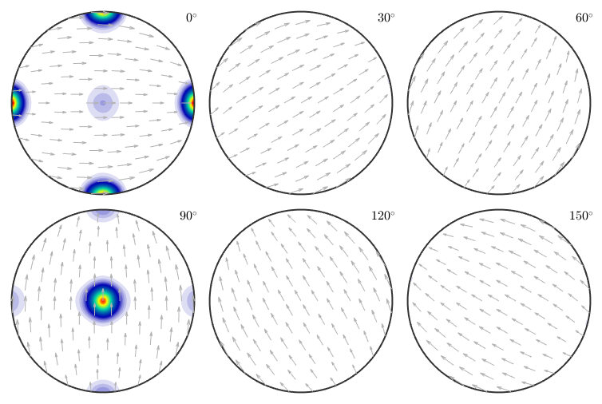 Obviously, both orienatations are not symmetrically equivalent as -43m does not has a four fold axis. This can also be seen from the pole figure plots above which are different for, e.g., (111). However, when looking at an arbitrary pole figure with additionaly imposed antipodal symmetry both orientations appears at exactly the same positions
plotPDF(ori1,h,'MarkerSize',12,'antipodal') hold on plotPDF(ori2,'MarkerSize',8) hold off

The reason is that adding antipoal symmetry to all pole figures is equivalent to adding the inversion as an additional symmetry to the point group, i.e., to replace it by the Laue group. Which is illustrated in the following plot
ori1.CS= ori1.CS.Laue; ori2.CS= ori2.CS.Laue; h.CS = h.CS.Laue; plotPDF(ori1,h,'MarkerSize',12) hold on plotPDF(ori2,'MarkerSize',8) hold off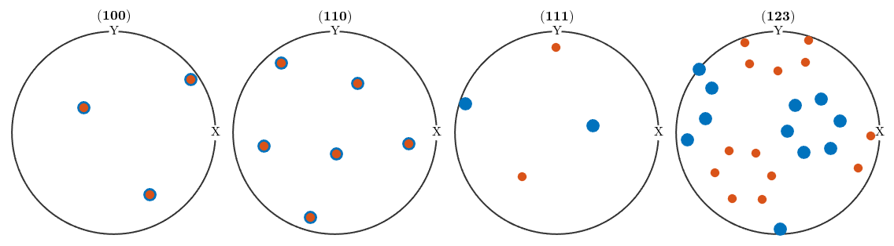
As a consequence of Fridels law all non centrosymmetric information about the texture is lost in the diffraction pole figures and we can only aim at recovering the centrosymmetric portion. In particular, any ODF that is reconstructed by MTEX from diffraction pole figures is centrosymmetric, i.e. its point group is a Laue group. If the point group of the crystal was already a Laue group then Fridel's law does not impose any additional ambiguity.
The inherent ambiguity of the pole figure - ODF relationship
Unfortunately, knowing all diffraction pole figures of an ODF is even for centrosymmetric symmetries not sufficent to recover the ODF unambiguisly. To understand the reason for this ambiguity we consider triclinic symmetry and a week unimodal ODF with prefered orientation (0,0,0).
cs = crystalSymmetry('-1') odf1 = 2/3 * uniformODF(cs) + 1/3 * unimodalODF(orientation.id(cs),'halfwidth',30*degree) plotPDF(odf,Miller(1,0,0,cs),'antipodal')
cs = crystalSymmetry
symmetry : -1
a, b, c : 1, 1, 1
alpha, beta, gamma: 90°, 90°, 90°
reference frame : X||a, Y||b, Z||c
odf1 = ODF
crystal symmetry : -1, X||a, Y||b, Z||c
specimen symmetry: 1
Uniform portion:
weight: 0.66667
Radially symmetric portion:
kernel: de la Vallee Poussin, halfwidth 30°
center: (0°,0°,0°)
weight: 0.33333
As any other ODF we can represent it by its series expansion by harmonic functions. This does not change the ODF but only its representation
odf1 = FourierODF(odf1,10) plotPDF(odf1,Miller(1,0,0,cs))
odf1 = ODF
crystal symmetry : -1, X||a, Y||b, Z||c
specimen symmetry: 1
Portion specified by Fourier coefficients:
degree: 10
weight: 1
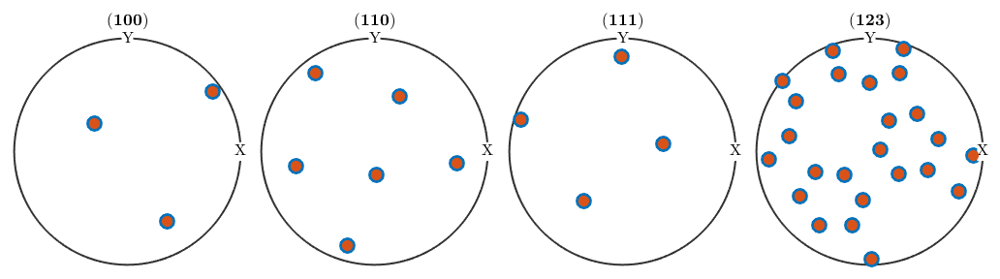 We may look at the coefficients of this expansion and observe how the decay to zero rapdidly. This justifies to cut the harmonic expansion at harmonic degree 10.
close all plotFourier(odf1,'linewidth',2) %set(gca,'yScale','log')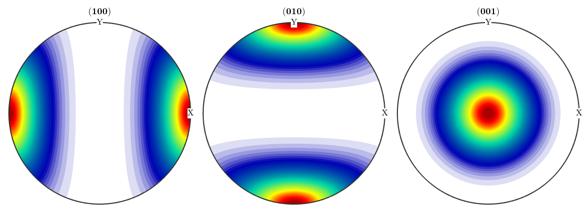
Next we define a second ODF which differs by the first one only in the odd order harmonic coefficients. More precisely, we set all odd order harmonic coefficients to zero
A = mod(1:11,2); odf2 = conv(odf1,A) hold on plotFourier(odf2,'linewidth',2) %set(gca,'yScale','log') hold off legend('odf1','odf2')
odf2 = ODF
crystal symmetry : -1, X||a, Y||b, Z||c
specimen symmetry: 1
Portion specified by Fourier coefficients:
degree: 10
weight: 1
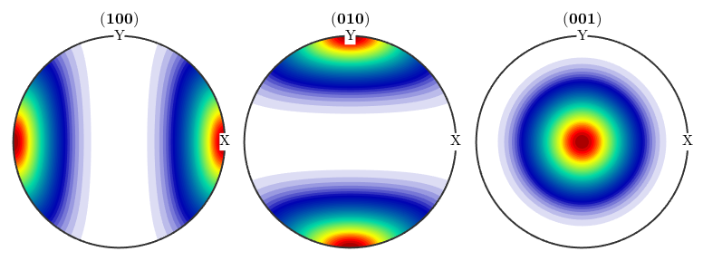 The point is that all pole figures of odf1 looks exactly the same as the pole figures of odf2.
plotPDF(odf2,Miller(1,0,0,cs),'antipodal')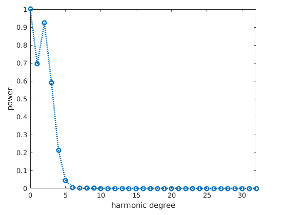 and hence, it is imposible for any reconstruction algorithm to decide whether odf1 or odf2 is the correct reconstruction. In order to compare odf1 and odf2 we visualize them along the alpha fibre
alphaFibre = orientation('axis',zvector,'angle',(-180:180)*degree,cs) close all plot(-180:180,odf1.eval(alphaFibre),'linewidth',2) hold on plot(-180:180,odf2.eval(alphaFibre),'linewidth',2) hold off legend('odf1','odf2') xlim([-180,180])
alphaFibre = orientation size: 1 x 361 crystal symmetry : -1, X||a, Y||b, Z||c specimen symmetry: 1

We can make the example more extreme by applying negative coefficients to the odd order harmonic coefficients.
odf1 = 4/5 * uniformODF(cs) + 1/5 * unimodalODF(orientation.id(cs),'halfwidth',30*degree); A = (-1).^(0:10); odf2 = conv(odf1,A); close all plot(-180:180,odf1.eval(alphaFibre),'linewidth',2) hold on plot(-180:180,odf2.eval(alphaFibre),'linewidth',2) hold off legend('odf1','odf2') xlim([-180,180])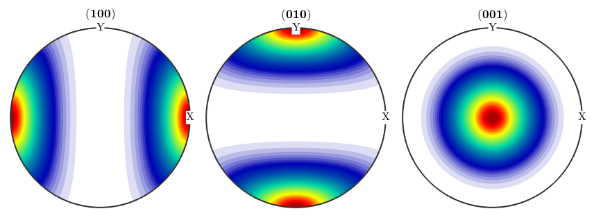
We obtain two completely different ODF: odf1 has a prefered orientation at (0,0,0) while odf2 has prefered orientations at all rotations about 180 degree. These two ODFs have completely identical pole figures and hence, it is imposible by any reconstruction method to decide which of these two ODF was the correct one. It was the idea of Matthies to say that a physical meaningful ODF usually consists of a uniform portion and some components of prefered orientations. Thus in the reconstruction odf1 should be prefered over odf2. The idea to distinguish between odf1 and odf2 is that odf1 has a larger uniform portion and hence maximizing the uniform portion can be used as method to single out a physical meaningful solution.
Lets demonstrate this at the given example and simulate some pole figures out of odf2.
h = Miller({1,0,0},{1,0,0},{0,1,0},{0,0,1},{1,1,0},{0,1,1},{1,0,1},{1,1,1},cs)
pf = calcPoleFigure(odf1,h)
plot(pf)h = Miller size: 1 x 8 symmetry: -1, X||a, Y||b, Z||c h 1 1 0 0 1 0 1 1 k 0 0 1 0 1 1 0 1 l 0 0 0 1 0 1 1 1 pf = PoleFigure crystal symmetry : -1, X||a, Y||b, Z||c specimen symmetry: 1 h = (100), r = 72 x 37 points h = (100), r = 72 x 37 points h = (010), r = 72 x 37 points h = (001), r = 72 x 37 points h = (110), r = 72 x 37 points h = (011), r = 72 x 37 points h = (101), r = 72 x 37 points h = (111), r = 72 x 37 points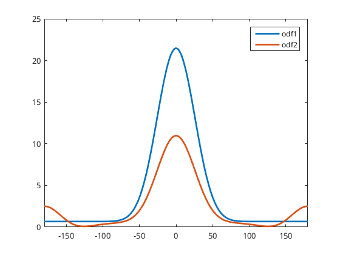
When reconstruction an ODF from pole figure data MTEX automatically uses Matthies methods of maximizing the uniform portion called automatic ghost correction
odf_rec1 = calcODF(pf)
initialize solver
start iteration
error: 7.9460E-02 1.4974E-02 5.7578E-03 2.9711E-03 1.8118E-03 1.1612E-03 7.7379E-04 5.1249E-04 3.4428E-04 2.3561E-04 1.5854E-04 1.1064E-04
Finished PDF-ODF inversion.
error: 1.1064E-04
alpha: 1.0009E+00 1.0009E+00 1.0003E+00 9.9949E-01 1.0018E+00 1.0006E+00 1.0002E+00 9.9946E-01
initialize solver
start iteration
error: 7.2807E-01 4.6834E-01 3.0797E-01 1.9903E-01 1.2230E-01 6.5393E-02 3.3852E-02 1.6745E-02 1.3132E-02 1.0378E-02 8.7011E-03 7.3540E-03
Finished PDF-ODF inversion.
error: 7.3540E-03
alpha: 9.9066E-01 9.9066E-01 9.7098E-01 9.9481E-01 9.9052E-01 1.0287E+00 1.0279E+00 1.0539E+00
odf_rec1 = ODF
crystal symmetry : 1, X||a, Y||b, Z||c
specimen symmetry: 1
Uniform portion:
weight: 0.80071
Radially symmetric portion:
kernel: de la Vallee Poussin, halfwidth 5°
center: 119088 orientations, resolution: 5°
weight: 0.19929
This method can be switched off by the following command
odf_rec2 = calcODF(pf,'noGhostCorrection')initialize solver
start iteration
error: 7.9460E-02 1.4974E-02 5.7578E-03 2.9711E-03 1.8118E-03 1.1612E-03 7.7379E-04 5.1249E-04 3.4428E-04 2.3561E-04 1.5854E-04 1.1064E-04
Finished PDF-ODF inversion.
error: 1.1064E-04
alpha: 1.0009E+00 1.0009E+00 1.0003E+00 9.9949E-01 1.0018E+00 1.0006E+00 1.0002E+00 9.9946E-01
odf_rec2 = ODF
crystal symmetry : 1, X||a, Y||b, Z||c
specimen symmetry: 1
Radially symmetric portion:
kernel: de la Vallee Poussin, halfwidth 5°
center: 119088 orientations, resolution: 5°
weight: 1
When comparing the reconstructed ODFs we observe that by using ghost correction we are able to recover odf1 quite nicely, while without ghost correction we obtain a mixture between odf1 and odf2.
close all plot(-180:180,odf_rec1.eval(alphaFibre),'linewidth',2) hold on plot(-180:180,odf_rec2.eval(alphaFibre),'linewidth',2) hold off legend('odf rec1','odf rec2') xlim([-180,180])

This become more clear when looking at the harmonic coefficients of the reconstructed ODFs. We observe that without ghost correction the recovered odd order harmonic coefficients are much smaller then the orginal ones.
close all plotFourier(odf1,'linewidth',2,'bandwidth',10) hold on plotFourier(odf2,'linewidth',2) plotFourier(odf_rec1,'linewidth',2) plotFourier(odf_rec2,'linewidth',2) hold off legend('odf1','odf2','odf rec1','odf rec2')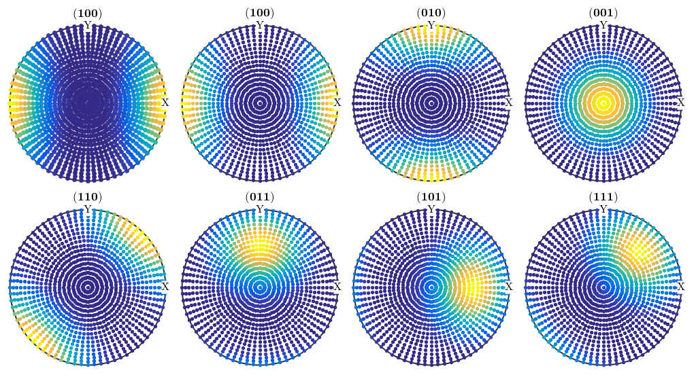
Historically, this effect was is tightly connected with the so called SantaFe sample ODF.
odf = SantaFe; plot(odf,'contourf') mtexColorMap white2black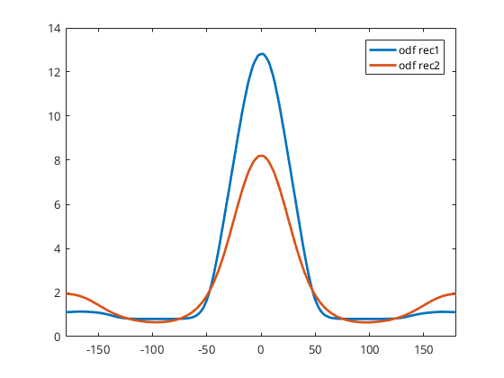
Lets simulate some diffraction pole figures
% crystal directions h = Miller({1,0,0},{1,1,0},{1,1,1},{2,1,1},odf.CS); % simulate pole figures pf = calcPoleFigure(SantaFe,h,'antipodal'); % plot them plot(pf,'MarkerSize',5) mtexColorMap LaboTeX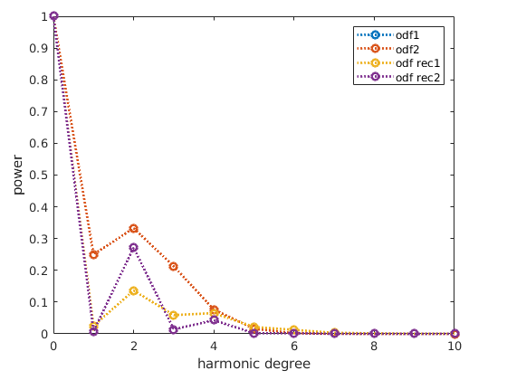
and compute a two ODFs from them
% one with Ghost Correction rec = calcODF(pf) % one without Ghost Correction rec2 = calcODF(pf,'NoGhostCorrection')
initialize solver
start iteration
error: 5.7919E-02 1.0510E-02 1.7344E-03 7.3757E-04 3.5242E-04 2.2099E-04 1.5546E-04 1.2135E-04 9.9848E-05 8.5743E-05 7.5614E-05
Finished PDF-ODF inversion.
error: 7.5614E-05
alpha: 1.0004E+00 9.9994E-01 1.0003E+00 1.0002E+00
initialize solver
start iteration
error: 4.6301E-01 2.9660E-01 1.7476E-01 9.2992E-02 3.9349E-02 1.1770E-02 4.6900E-03 1.8459E-03 1.1187E-03 7.6082E-04 5.5952E-04 4.4272E-04
Finished PDF-ODF inversion.
error: 4.4272E-04
alpha: 9.9317E-01 9.9906E-01 1.0053E+00 1.0023E+00
rec = ODF
crystal symmetry : 432
specimen symmetry: 222
Uniform portion:
weight: 0.72973
Radially symmetric portion:
kernel: de la Vallee Poussin, halfwidth 5°
center: 1232 orientations, resolution: 5°
weight: 0.27027
initialize solver
start iteration
error: 5.7919E-02 1.0510E-02 1.7344E-03 7.3757E-04 3.5242E-04 2.2099E-04 1.5546E-04 1.2135E-04 9.9848E-05 8.5743E-05 7.5614E-05
Finished PDF-ODF inversion.
error: 7.5614E-05
alpha: 1.0004E+00 9.9994E-01 1.0003E+00 1.0002E+00
rec2 = ODF
crystal symmetry : 432
specimen symmetry: 222
Radially symmetric portion:
kernel: de la Vallee Poussin, halfwidth 5°
center: 1232 orientations, resolution: 5°
weight: 1
For both reconstruction recalculated pole figures look the same as the inital pole figures
figure(1) plotPDF(rec,pf.h,'antipodal') mtexColorMap LaboTeX figure(2) plotPDF(rec2,pf.h,'antipodal') mtexColorMap LaboTeX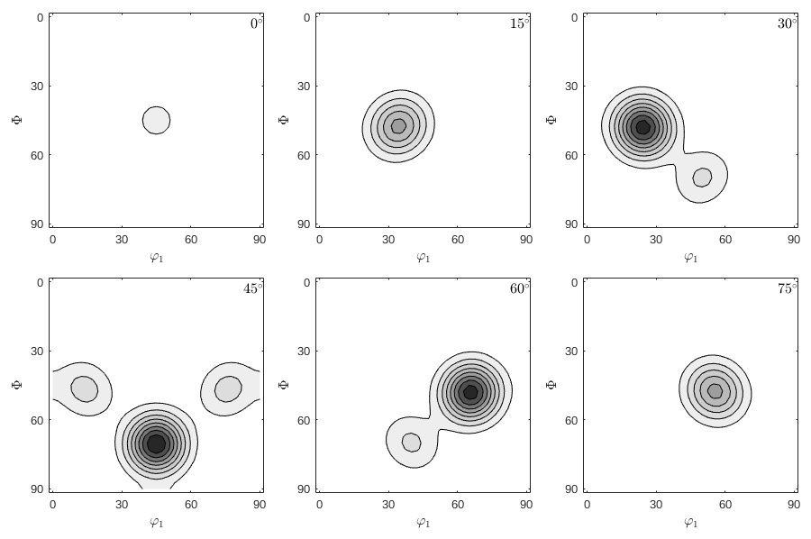
However if we look at the ODF we see big differences. The so called ghosts.
figure(1) plot(rec,'gray','contourf') mtexColorMap white2black figure(2) plot(rec2,'gray','contourf') mtexColorMap white2black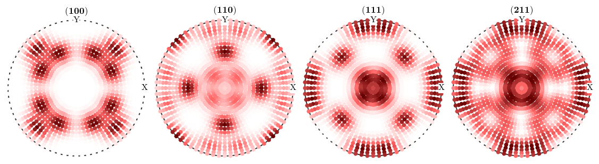
Again we can see the source of the problem in the harmonic coefficients.
close all; % the harmonic coefficients of the sample ODF plotFourier(SantaFe,'bandwidth',32,'linewidth',2,'MarkerSize',10) % keep plot for adding the next plots hold all % the harmonic coefficients of the reconstruction with ghost correction: plotFourier(rec,'bandwidth',32,'linewidth',2,'MarkerSize',10) % the harmonic coefficients of the reconstruction without ghost correction: plotFourier(rec2,'bandwidth',32,'linewidth',2,'MarkerSize',10) legend({'true ODF','with ghost correction','without ghost correction'}) % next plot command overwrites plot hold off

| DocHelp 0.1 beta |